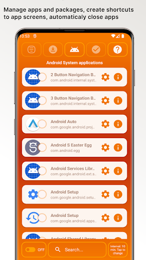
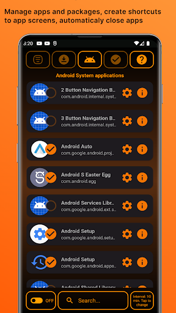
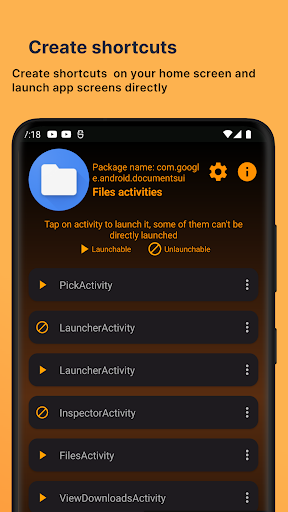
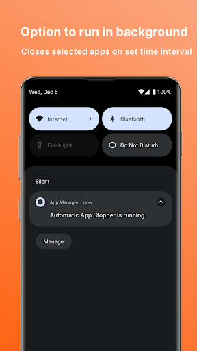
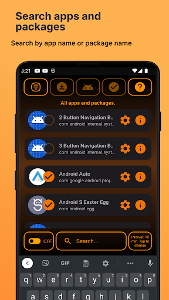

App Stopper
Stop Unwanted Apps from Running in Background

Control Your Phone Your Way
When you use android phone from major manufacturers, you get bunch of unwanted software (bloatware) preinstalled that sometimes runs in background (sometimes it starts via predefined system event that manufacturer sets) and you are unable to uninstall it. If you are good with tech and you force uninstall it via adb commands, it might break system functionality . This app comes in handy to periodically close that apps without needing to uninstall them so you don't risk breaking system functionality. It can also help you to figure out which apps are really needed for your phone to work optimally for your use-case, by experimenting which processes you select to close.In order to achieve this, this app runs in background and you will see when its automatic closing feature is active in notification area. It also comes with features to directly launch particular app screen (if the app supports it) . For example you can make shortcuts on your home screen to directly launch WiFi settings, open built in android file manager, open aliexpress app without splash screen etc.. If you want to search the internet for specific app, it offers you to copy app package name and you can paste it in your search engine so you can learn more about that app and decide if you want to keep it..
Create shortcuts
make shortcuts on your home screen to directly launch WiFi settings, open built in android file manager, open aliexpress app without splash screen etc..
App Management
Periodically close apps without needing to uninstall them so you don't risk breaking system functionality
Search Apps
Copy app package name and you can paste it in your search engine so you can learn more about that app and decide if you want to keep it..




